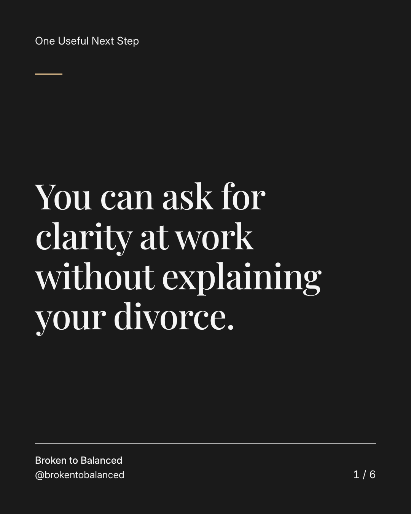
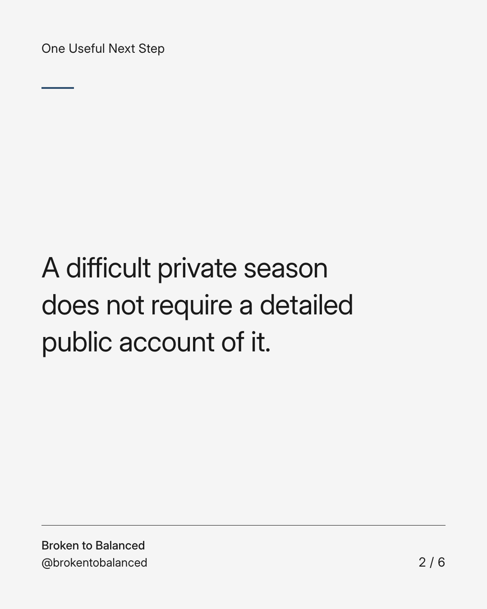
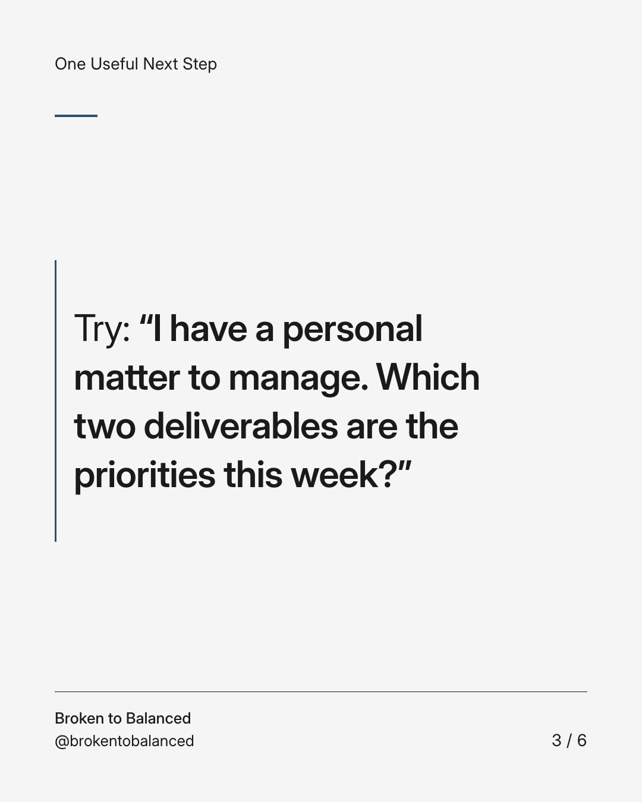
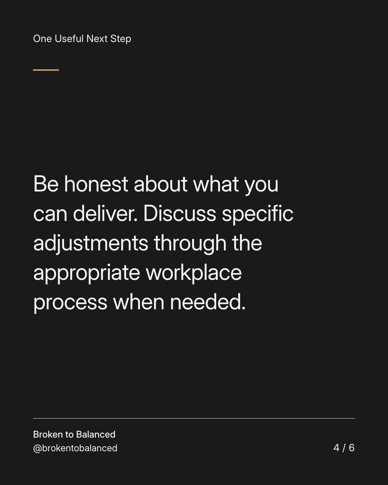
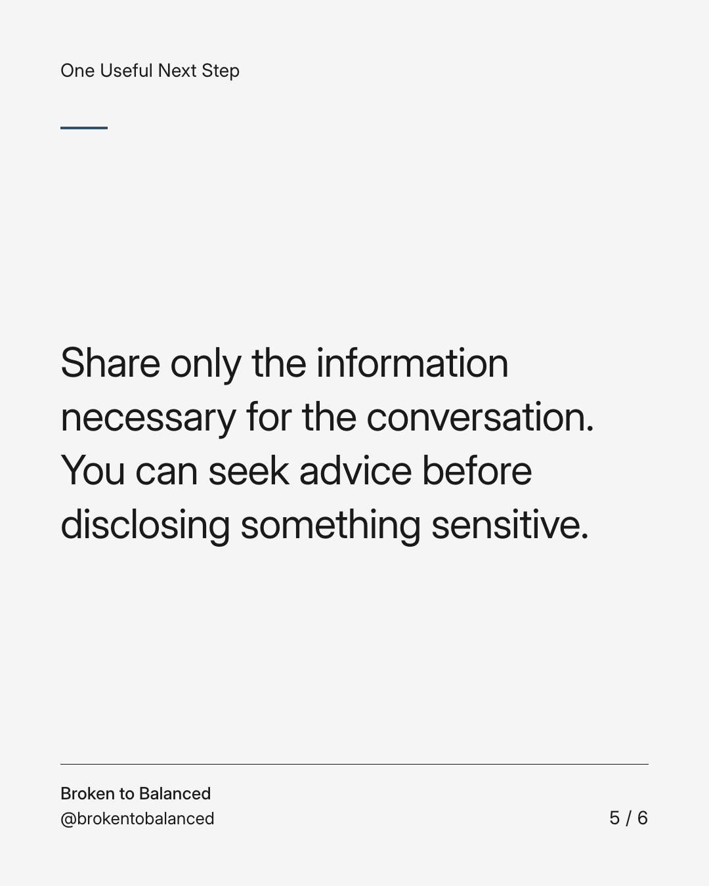
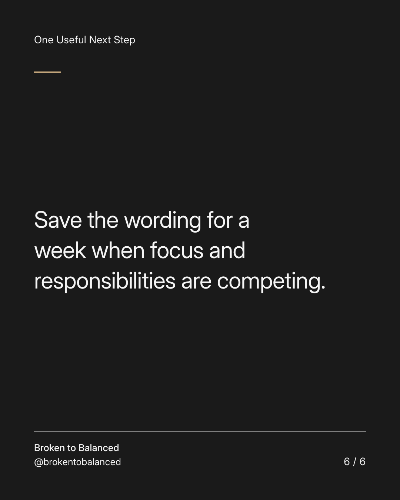

Exact text and accessibility text
You can ask for clarity at work without explaining your divorce.
Slide 1 of 6. You can ask for clarity at work without explaining your divorce.


Exact text and accessibility text
A difficult private season does not require a detailed public account of it.
Slide 2 of 6. A difficult private season does not require a detailed public account of it.


Exact text and accessibility text
Try: “I have a personal matter to manage. Which two deliverables are the priorities this week?”
Slide 3 of 6. Try: “I have a personal matter to manage. Which two deliverables are the priorities this week?”


Exact text and accessibility text
Be honest about what you can deliver. Discuss specific adjustments through the appropriate workplace process when needed.
Slide 4 of 6. Be honest about what you can deliver. Discuss specific adjustments through the appropriate workplace process when needed.


Exact text and accessibility text
Share only the information necessary for the conversation. You can seek advice before disclosing something sensitive.
Slide 5 of 6. Share only the information necessary for the conversation. You can seek advice before disclosing something sensitive.


Exact text and accessibility text
Save the wording for a week when focus and responsibilities are competing.
Slide 6 of 6. Save the wording for a week when focus and responsibilities are competing.
Exact caption
Plain-text fallback: select and copy the caption.